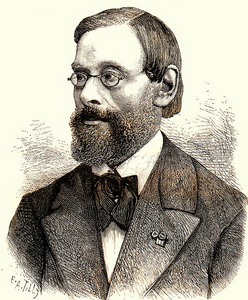

Doktor Duzi (1820 - 1883)
(Reinhart Pieter Anne Dozy)

Ülkemizde Doktor Duzi olarak tanýnan, Risale-i Nur'da, Ýslamiyet ve Kur'an aleyhindeki yazýlarýndan dolayý ismi anýlan, Hollandalý þarkiyatçý, Güney Fransa'dan Leiden'e göç eden, Protestan mezhebine mensup bir ailenin çocuðudur. Ýslam Tarihi ve Kur'an-ý Kerim hakkýnda yazmýþ bulunduðu kitaplarýndaki hakaretlerinden ötürü, Ýslam Dünyasýnda haklý bir infiale ve öfkeye sebep olan ve Müslümanlarýn nefretini celbeden kimliðiyle tanýnmaktadýr.Dozy, 1820 yýlýnda Leiden'de doðdu. Leiden Üniversitesi'ndeki öðrenimi sýrasýnda filoloji, edebiyat ve tarih alanlarýna gösterdiði ilgi ile dikkatleri çekerek önemli baþarýlar kazandý. Þark dilleri uzmaný olan Weijers'ten Arapça dersleri aldý. Hocasýnýn da yönlendirmeleriyle Þark tarihi üzerinde araþtýrmalar yapmaya baþladý. Hollanda Kraliyet Akademisi tarafýndan tertiplenen, "Geçmiþten günümüze Araplar tarafýndan kullanýlan kadýn ve erkek elbiseleri" konulu yarýþmaya sunduðu çalýþmasýyla birincilik ödülünü aldý.
Ýslam tarihinde baþladýðý çalýþmalarýný sürdürerek, doktorasýný, "Arap Kaynaklarýna Göre Abadiler" konulu teziyle tamamladý. Ýspanyolca'yý öðrenip Endülüs Tarihini, Ýspanyol kaynaklarýndan araþtýrmaya baþladý. Bu alanda çok sayýda yanlýþ bilgilerle karþýlaþýnca yeni bir tarih yazmaya baþladý. Bazý idari görevlerde de bulunan Dozy, 1850 yýlýnda Leiden Üniversitesi genel tarih kürsüsüne asistan profesör unvanýyla atandý ve dört yýl sonra da profesörlük unvanýný aldý.
Özellikle on dokuzuncu yüz yýl, Batýnýn Doðuya doðru yayýlmasýnýn hýz kazandýðý bir asýrdýr. Þarký tamamen kontrolleri altýna alýp sömürgeleþtirmeyi temel gaye edinen Batý, amacýna ulaþmak için gerekli çalýþmalarý çok yoðun bir þekilde desteklemiþtir. Ýslam coðrafyasý ve kültürü hakkýnda yapýlan çalýþmalar en üst kademedeki devlet organlarý tarafýndan desteklenmiþtir. Destek görüp, teþvik edilenlerden bir tanesi de Dozy'dir. Özellikle 1861-1867 arasýnda sürdürdüðü Þark dilleri kürsüsündeki çalýþmalarý sýrasýnda maddi-manevi çok büyük destek gördü. Muhtelif ülkelerdeki akademilerin üyeliklerine seçildi ve bir çok devlet tarafýndan çeþitli niþanlarla ödüllendirildi.
Dozy'nin en kapsamlý çalýþmalarýndan bir tanesi, "Ýspanya Müslümanlarýnýn Tarihi" adlý eseridir. Bu eserini on yýlda tamamladý. Konuyla ilgili olarak Avrupa kütüphanelerinde bulunan kaynaklarý taradý. Çok sayýda eseri inceleyip uzun emek sarf etmesine raðmen, bazý konularda haddinden fazla tafsilata girdi. Yorum ve tarafgirliðin en çok görüldüðü alanlardan biri olan siyasi tarihe aðýrlýk verdi. Kültür tarihini ihmal ettiði gibi, Ýslamiyet'in Ýspanya'da gerçekleþtirmiþ olduðu seyir ve bunun temel sebepleri hakkýnda objektif deðerlendirmelerde bulunamadý. Sübjektif yorumlarý sert eleþtirilere sebep oldu.
Tamamen sübjektif deðerlendirme ve yorumlarlardan ibaret olan ve Ýslam Dünyasýnýn haklý tepkilerine sebep olan, Abdullah Cevdet tarafýndan 1908 yýlýnda Türkçe'ye "Tarih-i Ýslamiyet" adýyla tercüme edilen eseridir. Yazar bu eserinde, din, vahiy, peygamberlik ve Peygamber Efendimizin peygamberliði, Ýsmaililer, Dürziler, Karmatiler gibi muhtelif konulara temas etmiþtir. Gerek Kur'an-ý Kerim gerekse Peygamber Efendimiz (asm) hakkýnda iftira ve hakaretlerle dolu ifadelere yer vermekten çekinmemiþtir. Müslümanlarýn inançlarýný rencide eden eseri tercüme eden Abdullah Cevdet ise, "Bugün Müslümanlar için Tarih-i Ýslamiyet'ten daha faydalý bir kitap yoktur" demekle kalmayýp, bu eseri yazanýn Müslüman sayýlmasý gerektiðini iddia edecek kadar ileri gitmiþtir (Mehmet Özdemir; "DOZY, Reinhart Pieter Anne", TDVÝA. IX.C. s. 514).
Kitaptaki bariz Ýslam düþmanlýðýna raðmen tercüme edilip genç dimaðlarýn bulandýrýlmasý çok sert tepkilere sebep oldu. Hükümet 17 Þubat 1910 yýlýnda aldýðý kararla mevcut nüshalarý toplatarak kitabý yasaklattý. Eserle ilgili olarak, Sýrat-ý Müstakim, Beyanülhak ve Sebilürreþad'da seri makaleler halinde eleþtiriler kaleme alýndý. Türkçe tercümesinin yayýnýndan yaklaþýk iki yýl sonra yasaklanan ve toplatma kararý alýnan bu eser, tamamen ortadan kalmadýðý gibi, sonraki dönemlerde bazý kütüphanelerde varlýðýný devam ettirdi.
Doktor Dozy gibi bir Ýslam düþmanýnýn eserlerine iliþilmezken Risale-i Nur'lar hakkýnda verdirilen toplatma kararlarý, daha sonraki zamanlarda toplumda fikri bunalým ve anarþizme yol açtý.
Denizli Mahkemesinde yaptýðý müdafaada Bediüzzaman, "Kur'an aleyhinde yazýlan Doktor Duzi'nin ve sair zýndýklarýn o muzýr eserlerini okuyanlara, "hürriyet-i fikir ve hürriyet-i ilmiye" düsturuyla, bir suç sayýlmadýðý halde; hakîkat-i Kur'aniyeyi ve îmaniyeyi öðrenmeye gayet muhtaç ve müþtak olanlara, güneþ gibi bildiren Risale-i Nur'u okumak ve yazmak bir suç sayýlmýþ..." (Tarihçe-i Hayat, s. 355) diyerek uygulanan tezada dikkat çekmiþtir.
Dozy'nin hakaret ve iftiralardan ibaret olan eserini eleþtiren Bediüzzaman, bu eserin yayýn ve daðýtýmýna fikir hürriyeti adý altýnda izin verilirken, bu iftiralarý izale edip gençleri fikir bunalýmýna düþmekten kurtaracak olan eserlere karþý takýnýlan tavýrlara ve neticesinde meydana gelecek felaketlere dikkat çekti:
"Acaba, mahkeme-i kübrada, bu üç yüz milyar davacýlarýn karþýsýnda sizden sorulsa ki: "Doktor Duzi'nin, baþtan nihayete kadar serapa Islamiyetiniz ve vatanýnýz ve dîniniz aleyhinde ve frenkçe Tarih-i Islam namýndaki eseri ki; zýndýklarýn kütüphanelerinizdeki eserlerine, kitaplarýna ve serbest okumalarýna ve o kitaplarýn þakirtleri, kanununuzca cemiyet þeklini almalarýyla beraber, dinsizlik veya komünistlik veya anarþistlik veya pek eski ifsad komitecilik gibi, siyasetinize muhalif cemiyetlerine iliþmiyordunuz. Neden hiçbir siyasetle alakalarý olmayan ve yalnýz îman ve Kur'an cadde-i kübrasýnda giden ve kendilerini ve vatandaþlarýný îdam-ý ebedîden ve haps-i münferidden kurtarmak için Kur'an'ýn hakîki tefsiri olan Risale-i Nur gibi gayet hak ve hakîkat bir eseri okuyanlara ve hiçbir siyasî cemiyetle münasebeti olmayan o halis dindarlarýn birbiriyle uhrevî dostluk ve uhuvvetlerine cemiyet namý verip iliþmiþsiniz? Onlarý pek acîb bir kanunla mahkûm ettiniz ve etmek istediniz?" dedikleri zaman ne cevap vereceksiniz? Biz de sizlerden soruyoruz. Ve sizi iðfal eden ve adliyeyi þaþýrtan ve hükûmeti bizimle vatana ve millete zararlý bir sûrette meþgul eyleyen muarýzlarýmýz olan zýndýklar ve münafýklar, istibdad-ý mutlaka "cumhuriyet" namý vermekle, irtidad-ý mutlaký rejim altýna almakla, sefahet-i mutlaka "medeniyet" ismi vermekle, cebr-i keyfi-i küfrîye "kanun" ismini takmakla hem sizi iðfal, hem hükûmeti iþgal, hem bizi periþan ederek, hakimiyet-i Islamiyeye ve millete ve vatana, ecnebî hesabýna, darbeler vuruyorlar.
"Ey efendiler! Dört senede dört defa dehþetli zelzeleler, tam tamýna dört defa Risale-i Nur þakirtlerine þiddetli bir sûrette taarruz ve zulüm zamanlarýna tevafuku ve herbir zelzele dahi tam taarruz zamanýnda gelmesi ve hücumun durmasýyla zelzelenin durmasý iþaretiyle, þimdiki mahkûmiyetimiz ile gelen semavî ve arzî belalardan siz mes'ulsünüz" (Tarihçe-i Hayat, s. 363-364).